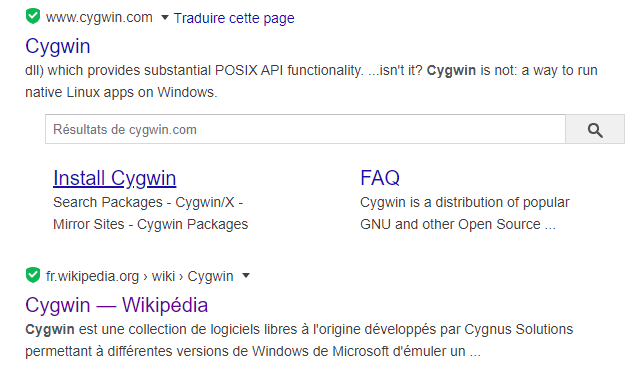
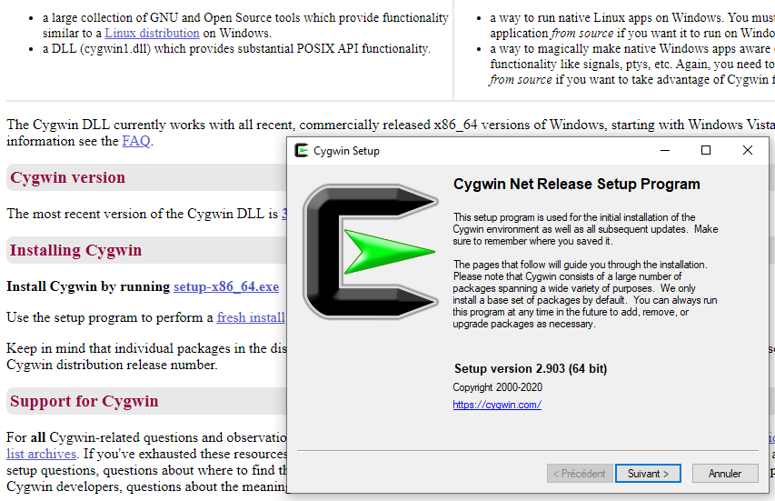
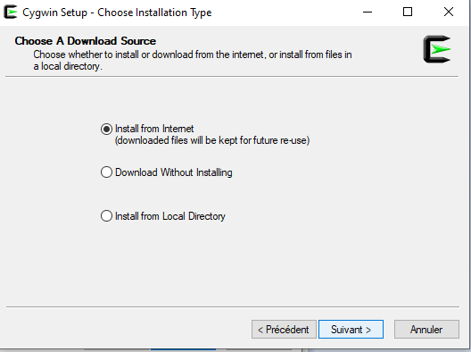
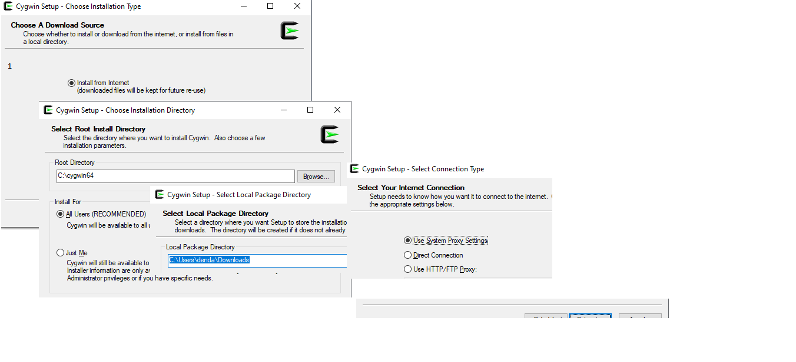
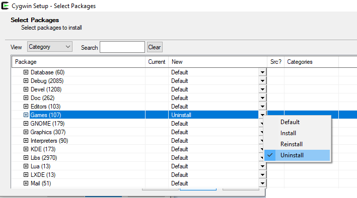

NSI Thème E : architectures matérielles et
systèmes d’exploitation
L'architecture matérielle des puces d'ordinateurs
La puce de l'ordinateur appelée CPU est le composant qui traite
les instructions des programmes et les données dont ils ont besoin.
architecture de Von Neumann
Il existe plusieurs architectures concevables pour organiser le traitement des données et des instructions de
programmes, celle qui a survécu à l'impitoyable sélection de l'histoire est l'architecture de VonNeumann
; elle se définit assez simplement comme :
une unité centrale qui ne communique qu'avec un seul type de mémoire de travail et les périphériques d'entrée
sortie. Les blocs d'instructions mémorisés peuvent combinner des instructions de programmation et des données.
Le CPU est composé d'une unité arithmétique et logique (ALU en anglais) associée
à une unité de contrôle (CU en anglais) qui gère l'adressage des données et des
instructions de programme : le CU envoie les calculs à faire à l'ALU, stocke et va chercher des données dans
les différentes mémoires (registres réservés aux données, cache, mémoire vive RAM, disques durs et autres
mémoire externes)
programmation au niveau du CPU : le langage machine et l'assembleur
simulation de fonctionnement d'un CPU et programmation en assembleur
Le site pixees.fr propose une activité basée sur la simulation d'un CPU. Le simulateur est accecible dans lien ci contre :
simulateur de CPU
Exemple de système d'exploitation libre : linux
linux est un sytème d'exploitation libre ; c'est à
dire qu'il est distribué gratuitement et développé par certains de ses
utilisateurs ; il est dérivé du système propriétaire Unix.
Linux représente un ensemble de programmes nécessaires et suffisant
pour gérer l'ensemble des fonctions de lecture, écriture des fichiers,
exécution des programmes avec gestion des processus (tâches
parallèles), des droits de lecture, écriture, bref tout ce que fait
le système microsoft Window (mais qui est payant et vendu de force
quand un PC est acheté !).
étapes de l'installation d'un émulateur linux sur pc windows
à partir du site cygwin.com
Aller sur le site cygwin.com

puis ...

puis ...

puis ...

puis ...

puis ...
Navigation dans l'arborescence des fichiers
Obtenir la liste des fichiers et dossiers du
répertoire courant (celui où l'on est) :
commande ls (sous MS-DOS ce serait dir)
Aide : ls --h ou ls -- help pour affiner l'affichage
Manipuler des fichiers
Essayez les commandes suivantes (puis = entrée ou retour à la
ligne):
ls puis touch fic.txt puis ls
qu'est-ce que cela fait ?
ls liste les dossiers et fichiers du dossier actuel,
fic.txt n'existe pas encore. touch le crée, ls le prouve.
ls puis cp fic.txt fic2.txt puis ls
qu'est-ce que cela fait ?
ls liste les dossiers et fichiers du dossier actuel, cp
duplique fic.txt en fic2.txt, ls le prouve.
ls puis mv fic.txt essai.txt puis ls
qu'est-ce que cela fait ?
ls liste les dossiers et fichiers du dossier actuel, mv
renomme fic.txt en essai.txt, ls le prouve.
Manipuler des dossiers (DIRerctory in english)
Les dossiers permettent de classer les fichiers dans une
arborescence de dossiers et sous dossiers ...
Le dossier racine est symbolisé par /
Le dossier racine de votre compte perso
(que j'appelle ici monCompte) se situe dans /home/monCompte , on
peut le symboliser par le caractère tilde : ~ (AltGr 2).
Essayez les commandes suivantes (puis = entrée ou retour à la
ligne):
ls puis cd . puis ls
qu'est-ce que cela fait ?
. est le répertoire courant, donc ici rien ne se passe,
mais que fait cd ?
ls puis cd .. puis ls
qu'est-ce que cela fait ?
.. est le chemin pour remonter d'un niveau dans
l'arborescence. Si on est dans monCompte, cd .. nous ramène
dans son dossier parent soit home.
ls puis cd /home/monCompte puis ls
qu'est-ce que cela fait ?
cd signifie change directory, ici le chemin est de type
absolu ; c'est à dire que le chemin est donné en entier
depuis la racine (c'est dangereux, surtout pour naviguer
entre les dossiers d'un site sur un serveur web) ;
il vaut mieux utiliser des chemins relatifs.
Le but est de pouvoir exécuter un script que l'on va appeler
essai.sh ; le problème est qu'il faut ajouter des droits d'exécution
à ce fichhier, sinon on ne pourra pas s'en servir.
touch essai.sh crée le fichier script ; son
extension sh permet au système de savoir que c'est un script
en langage bash exécutable ;
le fichier est vide, on peut l'éditer avec
nano essai.sh qui permet de l'éditer (lire et
modifier). On va faire simple et écrire echo "coucou c'est
nous !" puis Ctrl + O puis entrée
pour enregistrer les modifications et Ctrl + X pour
sortir de l'éditeur (nano).
cat essai.sh permet de vérifier que l'on a bien
modifié le fichier
ls -l produit la liste des fichiers du dossier
courant avec les droits exprimés sous la forme d'un enchaînement
de r w x et - représentant respectivement les droits de lecture
(r = read), écriture (w = write) et exécution (x = eXecute) ;
par exemple vous verrez probablement apparaître -rw-r--r-- au
tout début de la ligne concernant essai.sh ; le premier tiret
signifie que essai.sh n'est pas un dossier, rw- siginie que le
propriétaire (vous) du fichier peut lire et écrire mais pas
exécuter le fichier, les r-- qui suivent signifient que le
groupe principal auquel vous appartenez et toutes les autres
personnes connectées sur le réseau n'ont qu'un accès en lecture.
taper : ./essai.sh et le système
affiche bash: ./essai.sh: Permission non accordée
en tapant chmod 744 essai.sh on affecte à
essai.sh des droits d'exécution pour le propriétaire que vous
êtes. Les droits avant d'exécuter cette commande étaient 644
si vous tapez essai.sh l'erreur vient du fait
que le système prend votre fichier pour une commmande et il
ne la comprend pas, puisque ce n'en est pas une !
taper ./essai.sh et ça marche !
exemple 2 : donner des droits d'exécution à un script qui sera
exécuté en python
si votre script commence par #! suivi du chemin absolu de votre
interpréteur python (éxécutable en binaire), alors votre script sera
interprété en python ! Cela vous évitera de créer des scripts
compliqués en langage bash, faites les en python !
exemple : sur mon PC linux, le chemin absolu vers mon
interpréteur python est
/home/dendaletche/anaconda3/bin/python3.7, voici donc ce que
cela donne :
#!/home/dendaletche/anaconda3/bin/python3.7
#exécution d'un script python
n = int(input("Donner un petit nombre entier :"))
for i in range(n) :
print ( i, " : coucou c'est nous", " en PYTHON")
Pour simplifier encore, après avoir porté les droits à 744, on
peut renommer le fichier essai.py avec :
mv essai.sh essai.py
puis l'exécuter :
./essai.py
Et c'est tout !
Comparaison Unix / Window (DOS)
Page présentant un tableau comparant certaines commandes
courantes entre DOS et Linux :
cliquer ici